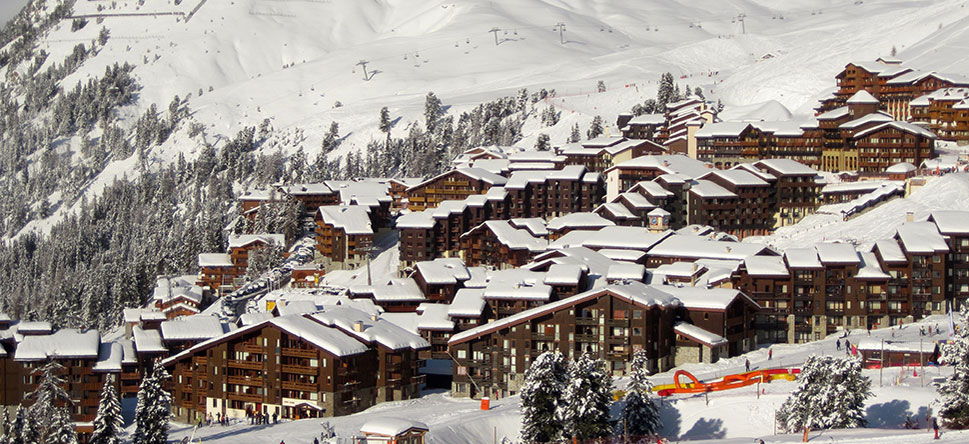

Французский горнолыжный регион Три Долины (Les Trois Vallees), известный также как Савойя (Savoia), включает в себя несколько великолепных долин. Площадь данного региона составляет 1 400 квадратных километров, так что горнолыжникам здесь есть, где насладиться катанием. Регион начал развиваться в первой четверти 20-го века и к настоящему времени он по праву считается одним из самых «заслуженных» горнолыжных комплексов во всей Европе. Говоря о курортах Трех Долин, стоит отметить, что этот центр является самым высокогорным в Европе (3 230 метров), здесь больше всего подъемников (около 200), самая большая протяженность трасс (около 600 километров) и самая большая армия инструкторов (около 1 500 человек).
- В Валь д'Изере и в Тине работает большое количество как детских (от трех лет), так и взрослых горнолыжных и сноубордических школ, где преподают в общей сложности 800 инструкторов (350 в Тине и 450 в Валь д'Изере).
- В школах лыжники могут научиться кататься буквально «с нуля» или усовершенствовать свои навыки.
- Помимо этого, можно, например, слетать с инструктором на вертолете в самые отдалённые районы
- Стоимость группового обучения в лыжных школах составляет 190 - 215 евро за трёхдневный курс (по три часа в день)
Как и следует из названия региона, горнолыжные курорты располагаются в трех долинах: Бельвиль (Belleville), где находятся Валь Торанс, Ле Менюир, Ст. Мартин; Сен-Бон (Saint-аре и Брид-ле-Бен. Между долинами курсируют автобусы, на которых можно доехать, например, из Бельвиля в Сен-Бон за полтора часа. Дорога от Сен-Бона до курортов Лез Алю займет еще около двух часов.
Перепад высот в регионе составляет 1 300 - 3 230 метров над уровнем моря, а что касается соотношения трасс по сложности, то в Трех Долинах преобладают «красные» спуски среднего уровня сложности - их здесь 107. Немного меньше легких «синих» трасс - их 97, тогда как для настоящих экстремалов оборудовано 37 сложных «черных» трасс. Также на курортах есть четыре широкие и гладкие «зеленые» трассы, по которым можно кататься даже начинающим горнолыжникам, так как здесь почти невозможно набрать скорость. Более того, в Савойе предусмотрены поистине фантастические возможности для внетрассового катания, а также проложено 124 километра трасс для беговых лыж и оборудовано несколько сноу-парков. Несмотря на то, что данный регион Франции известен своей устойчивой погодой и гарантированным снегом, в курортах установлено более 1 200 снежных пушек, обеспечивающих при необходимости идеальное покрытие трасс.
- В Валь д'Изере и в Тине работает большое количество как детских (от трех лет), так и взрослых горнолыжных и сноубордических школ, где преподают в общей сложности 800 инструкторов (350 в Тине и 450 в Валь д'Изере).
- В школах лыжники могут научиться кататься буквально «с нуля» или усовершенствовать свои навыки.
- Помимо этого, можно, например, слетать с инструктором на вертолете в самые отдалённые районы
- Стоимость группового обучения в лыжных школах составляет 190 - 215 евро за трёхдневный курс (по три часа в день)
Заголовок H2
Как и следует из названия региона, горнолыжные курорты располагаются в трех долинах: Бельвиль (Belleville), где находятся Валь Торанс, Ле Менюир, Ст. Мартин; Сен-Бон (Saint-аре и Брид-ле-Бен. Между долинами курсируют автобусы, на которых можно доехать, например, из Бельвиля в Сен-Бон за полтора часа. Дорога от Сен-Бона до курортов Лез Алю займет еще около двух часов.
Заголовок H3
Специально для самых маленьких гостей курортов, здесь работают детские горнолыжные школы, принимающие на обучение ребят от четырёх лет. Стоимость обучения составляет около 37 - 50 евро за одно занятие и 180 - 242 евро за пятидневный курс.
Самые дорогие отели располагаются на территории Мерибеля и Куршевеля, но и здесь при желании можно найти возможности недорогого размещения. Средняя стоимость одной ночи в отеле категории 3* здесь составляет порядка 100 евро и выше, тогда как на других курортах 80 - 90 евро. Можно поселиться в семейных отелях, шале или апартаментах за 60 - 70 евро в сутки, но такие варианты придется хорошо поискать. Однако стоит помнить, что в период новогодних и рождественских праздников цены на отели заметно возрастают.
| Услуга | Стоимость |
|---|---|
| Простой поиск размещения | от 3000 рублей |
| Поиск размещения с разработкой маршрута | от 7500 рублей |
| Расписание ежедневных посещений для пребывания или этапа в Париже | от 500 рублей в день |